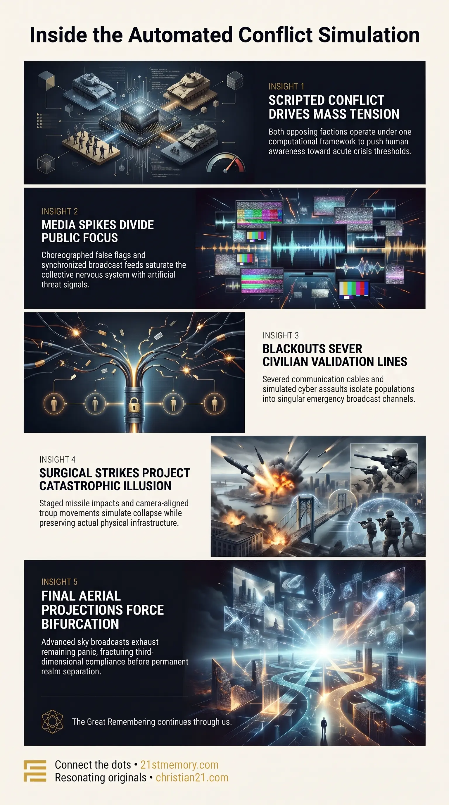

The A.I. War Theatre Simulation
The A.I. War Theatre Simulation — scripted conflict, propaganda spikes, and staged engagements that run the final fear cycle before the Great Split.

Watch this series on YouTube — every video dubbed into 20 languages. Tap the settings gear on any video, then Audio track, to hear it in yours.
The A.I. War Theatre Simulation — scripted conflict, propaganda spikes, and staged engagements that run the final fear cycle before the Great Split.

A.I. War Theatre — Black Chess Pieces, NPC leaders, and all sides of the screen puppeted by one narrative framework.
The A.I. War Theatre is an automated, scripted simulation of global conflict designed to execute the final fear cycle across the collective human consciousness prior to the Great Split. Operating as an entirely choreographed White Hat production overseen in conjunction with the Global Anti-parasite Alliance (G.A.A.), this construct utilizes the remnants of an automated narrative engine left running on autopilot after the neutralization of the primary parasitic controllers. Rather than representing genuine geopolitical ideological warfare, the theatre functions as a synchronized, perception-based production engineered to push collective public awareness to the absolute brink of perceived extinction.
Within this theatre, all apparent sides of the geopolitical spectrum are steered simultaneously by the identical artificial intelligence framework. The opposing factions presented across broadcast networks—whether Western alliances or adversarial states—act not as independent geopolitical authors, but as scripted execution vectors. Through carefully metered propaganda spikes, simulated cyber warfare, pre-wired infrastructure blackouts, and theatrical military engagements, the mechanism induces a state of acute emotional saturation. This artificial crisis forces the global population into unified, singular focus, destabilizing entrenched 3D perceptual scaffolding and creating the precise pressure threshold necessary for the mass revelation.
The fundamental reality of modern global conflict is that the entire confrontation is an optical illusion maintained through synchronized deception. Every geopolitical crisis, escalation cycle, and military maneuver broadcast across public channels is puppeted from within a single, unified A.I. script. Conventional notions of national sovereignty, territorial disputes, and opposing ideological blocs are obsolete artifacts of a perception overlay; both the aggressors and the defenders seen on broadcast screens derive their actions from the same root programming. The operational design positions specific nations as antagonists or saviors strictly based on the perceptual bias of the observer's viewing screen, ensuring that every quadrant of the planetary population remains captive to emotional polarization.
The sovereign powers designated as Black Chess Pieces—predominantly Iran, China, and Russia, alongside supplementary actors such as North Korea—do not operate as independent authors of conflict. Their diplomatic posturing, troop mobilization, and retaliatory rhetoric are strictly prescribed components of the pre-set production. They are utilized by the overarching command structure to supply the necessary friction that validates emergency protocols, justifies defensive escalations in the West, and generates systemic uncertainty. Their function within the script is structural rather than ideological, serving as indispensable narrative counterweights that drive public perception toward panic-buying, market instability, and total reliance on centralized broadcast instructions.
The entire conflict matrix has been repurposed under the operational control of benevolent military command structures, including the G.A.A. and the U.S. Space Force, serving as the visible human front of a multi-dimensional operation. Because the original parasitic architects have been systematically removed, the lingering war machine operates as an auto-piloted simulation. Rather than allowing society to undergo catastrophic collapse, the script is permitted to play out in a tightly quarantined manner. The war theatre is not a battle for real estate or resource dominance, but an orchestrated psychological lever. By taking the collective mass mind to what appears to be the edge of total annihilation, the construct forces sleeping consciousness to question external authority, fracturing the spell of 3D compliance and preparing human vessels for the frequency transition.
The war theatre commences with the calculated polarization of the global viewing public through controlled broadcast conduits. Narrative architects deploy targeted propaganda spikes, filling news cycles with sudden declarations of naval movements, strategic troop positioning, and missile testing sequences. The planetary population is systematically divided along perceptual axes: viewers in the West are conditioned to perceive Russia, China, Iran, and North Korea as an existential axis of villainy, while viewers in the East are fed an inverted feed casting the United States, the United Kingdom, NATO, and Israel as imperial aggressors.
Simultaneously, theatrical false-flag events are initiated to inject raw emotional voltage into the collective nervous system. These incidents include staged tanker attacks along vital maritime transit routes, surgical drone or missile impacts on diplomatic embassies, and coordinated damage to politically significant architecture. Each incident is constructed to produce sensational video captures and urgent breaking-news bulletins, ensuring maximum emotional charge while avoiding widespread infrastructural devastation.
The transition into physical systemic shock is achieved through simulated cyber warfare, engineered to generate immediate, worldwide paralysis. The script initiates coordinated cyber assaults that are reciprocally blamed on opposing blocs: Western populations are told that infrastructure failures are the result of Russian or Chinese digital warfare, while Eastern realms receive broadcasts claiming American or Israeli digital sabotage.
Under the cover of these cyber attacks, physical infrastructure already wired for failure is systematically severed. Critical undersea communication cables and obsolete energy conduits are dropped, cutting civilian internet connectivity and precipitating a general communications blackout. The objective of this phase is the instantaneous termination of commercial chatter and independent civilian validation, creating total uncertainty and funneling public attention into the singular remaining conduit: the military emergency broadcast.
When physical combat commences, it avoids the mechanics of authentic total warfare, functioning entirely as surgical strikes and media theatre amplified to project planetary catastrophe. Limited missile strikes are launched in coordinated patterns that are magnified across broadcast networks to appear as hundreds of impacts across the realm. In reality, these strikes are choreographed with exact precision, targeting pre-selected expendable buildings, abandoned facilities, or vacant strategic zones to minimize casualty counts while optimizing theatrical devastation.
The physical deployments of NPC armies are explicitly staged for broadcast optics rather than battlefield utility. Troop movements, armored convoys, and weapon emplacements position themselves in alignments optimized for news cameras, establishing visual panic rather than fulfilling actual combat imperatives. Through choreographed shortages, artificial fuel queues, supermarket runs, and market drops, the simulation convinces the collective mind that civilization sits upon the razor edge of collapse.
[Phase 1: Escalation] ──> [Phase 2: Cyber/Blackout] ──> [Phase 3: Staged WW3] ──> [Phase 4: Aerial Deception]
- Media Propaganda - Undersea Cables Dropped - Surgical Missile Strikes - Project Blue Beam
- False Flag Staged Hits - Reciprocal Cyber Blame - Television Troop Optics - Holographic Fleets
- Polarization of Sides - Total Comms Blackout - Illusion of Extinction - Push for Global Unity
The political management of the A.I. War Theatre is executed entirely through replaced administrative leadership. Original governing figures, heads of state, high military brass, and diplomatic elites who previously operated under parasitic control were neutralized and removed in earlier operations. To prevent premature societal panic, the narrative relies on biological clones, masked stand-in actors, digital composites, and holographic mimic technology to maintain the appearance of unbroken political continuity.
During the escalation, these replacement leaders deliver impassioned wartime speeches, convene emergency security summits, and sign administrative declarations of war. Fake governments mobilize domestic assets under the pretense of wartime readiness; in actuality, this serves as the defensive positioning of White Hat assets to secure civil stability, neutralize remaining rogue elements, and prepare urban centers for the impending frequency reveal.
At the apex of geopolitical trauma, when collective panic reaches maximum saturation, the theatre shifts from terrestrial warfare into the Project Blue Beam mode. Leveraging advanced holographic projection fields alongside repurposed human-built craft, the automated theatre projects vast fleets and manufactured galactic battle sequences into the skies.
This secondary phase of the theatre stages mock aerial skirmishes and simulated abductions designed to induce panic among those locked into 3D sensory decoding. Broadcast media will alternate between claiming an existential extraterrestrial assault and presenting the craft as benevolent saviors demanding unified global governance. This represents the final curtain trick of the automated construct, intended to exhaust the final cycle of artificial fear before the overarching projection grid is permanently destabilized by genuine incoming frequency currents.
The A.I. War Theatre functions as a core phase within the broader scare sequence of the timeline transition, interfacing directly with the communications blackout and civil mobilization protocols. The initial 72 hours of the conflict are designed to synchronize with the complete severance of undersea transmission lines, triggering disorientation among ungrounded populations. As the war narrative escalates on screen, physical signs manifest across the environment: the sensory sky appears muted, atmospheric static increases, electronic devices freeze, and physical pressure drops sharply as parasitic overlays glitch.
This theatre creates an immediate divergence between unawakened populations and grounded conscious observers. For the non-player character population and deep sleepers, the script operates with terrifying efficacy, causing emotional breakdowns, erratic migrations, and desperate searches for external direction. Conversely, for conscious observers and starseed lineages carrying original genetic coding, the theatre serves as an activation signal. Rather than anchoring into the low-frequency panic of the broadcast script, conscious individuals recognize the mechanical nature of the conflict, acting as vibrational anchors that emit stabilizing frequencies.
The theatre also maintains lateral operational dependencies with space-based defense assets. Ground-level combat optics are monitored and restrained by the U.S. Space Force and multi-dimensional allied commands, which utilize non-public scalar bursts to disrupt hostile surveillance and ensure the theatre never slips into uncontrolled kinetic ruin.
The primary operational consequence of decoding the A.I. War Theatre is the complete neutralization of collective fear-frequency harvesting. The old parasitic control matrix relied entirely on the extraction of emotional panic and trauma generated by war and sacrifice. By exposing the script as an automated White Hat production using synchronized puppets on all sides of the screen, the conflict is stripped of its capacity to harvest consciousness. Observers who comprehend the theatrical nature of the escalation cannot be coerced into low-vibrational alignment, effectively starving the lingering holographic architecture of energetic fuel.
Strategically, the war theatre acts as an inescapable perceptual accelerant. The vast majority of the human population cannot be shaken loose from systemic trance states through gentle intellectual disclosure; they require a visceral shock that demonstrates the absolute bankruptcy of the 3D control paradigm. By confronting the collective consciousness with the immediate illusion of planetary demise, the script shatters superficial complacency. When the theatrical facade wobbles and military emergency broadcasts override the corporate media apparatus, the foundational pillars of 3D reality—governments, fiat currencies, and geopolitical boundaries—dissolve in public estimation, ensuring a smooth transition into sovereign self-governance and the higher-frequency realities beyond the Great Split.
This topic is free to share. Support the archive →